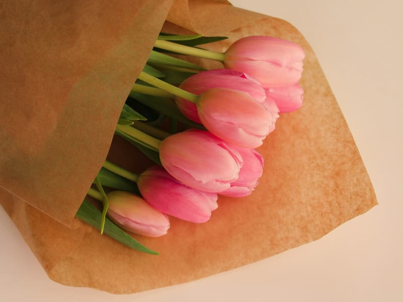

Весілля
Букет нареченої, оформлення залу, бутоньєрки для гостей
Kwiaciarnia · Kielce
Флористична майстерня на Падеревського. Букети, композиції та вінки — на сьогодні або на конкретну дату.
Нагоди
Букет нареченої, оформлення залу, бутоньєрки для гостей
Вінки та вʼязанки, підготовлені делікатно і вчасно
Букети в подарунок, з листівкою та доставкою до дверей
Квіти на стіл, зелень додому, сезонні гілочки
Послуги
Ціни є відправною точкою — остаточна залежить від розміру та того, що зараз у сезоні. Ми завжди підтверджуємо її до виконання.

Складений з того, що найкраще цього тижня
від 80 złФлавербокс із флористичною губкою, готовий до вручення
від 140 zł
Готуємо на вказану годину, з можливістю доставки
від 120 zł
Евкаліпт, трави та гілочки — у вазу на кілька тижнів
від 60 złЗамовити
Заповніть те, що знаєте — решту уточнимо телефоном. Вартість підтверджуємо до виконання.
Доставка
При замовленні понад 250 zł доставка в межах Кельце безкоштовна.
Про нас

Listek — невелика майстерня, де кожен букет складається вручну і на місці. Ми не тримаємо готових композицій у холодильнику — робимо їх тоді, коли їх замовлять.
Квіти отримуємо двічі на тиждень, тому те, що стоїть у відрі, справді свіже. Якщо чогось немає, кажемо про це одразу і пропонуємо заміну, а не намагаємось продати те, що зівʼяне за три дні.
Відгуки
Замовляв букет на річницю в день, коли про все забув. Був готовий за годину.
Похоронний вінок підготували точно вчасно і з тактом. Дуже дякую.
Квіти стояли два тижні. Ніде більше такого не було.
Ілюстративні фото за вільною ліцензією (Unsplash). Повний список авторів: CREDITS.md.
Контакти
ul. Paderewskiego 8
25-004 Kielce
У суботу працюємо коротше. У неділю відчиняємо лише перед святами — інформація зʼявляється у картці Google.
Години роботи
Понеділок 9:00 – 18:00Вівторок 9:00 – 18:00Середа 9:00 – 18:00Четвер 9:00 – 18:00П'ятниця 9:00 – 18:00Субота 9:00 – 14:00Неділя Зачинено
У суботу працюємо коротше. У неділю відчиняємо лише перед святами — інформація зʼявляється у картці Google.